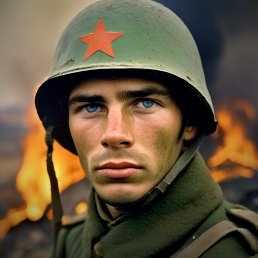
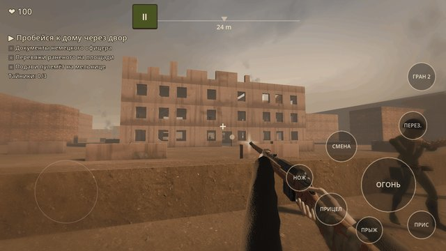

Дорога на Берлин: шутер WW2
Москва, 1941. Окоп под Можайском, в руках трёхлинейка, впереди — четыре года войны.
«Дорога на Берлин» — шутер от первого лица о Великой Отечественной. Пройди со своим отделением путь от обороны Москвы до знамени над Рейхстагом.

- Открытые карты: поле, деревня, лес, завод, руины Сталинграда. Прорывайся громко через площадь или тихо подвалами с ножом.
- Живое отделение: бойцы идут с тобой всю кампанию, прикрывают, ведут пленных, держат оборону.
- Оружие эпохи: Мосин, ППШ, ДП, ТТ, гранаты, а ещё трофейные MP 40, StG 44 и панцерфауст.
- Арсенал и магазин: трофеи за миссии, звёзды и тайники; улучшения и внешний вид бойца.
- Этапы по 3–5 минут с контрольными точками: можно отложить бой и вернуться к нему.
- Фронтовая сводка перед каждой миссией: реальные даты и места.
- Тир, «Оборона» волнами, задание дня и три сложности: от «Новобранца» до «Ветерана».
- Управление как в мобильных шутерах, кнопки можно переставить; переключатель «Кровь: выкл.».
- Русский и английский языки.
Без нацистской символики: только история фронта. Вперёд, на Берлин!